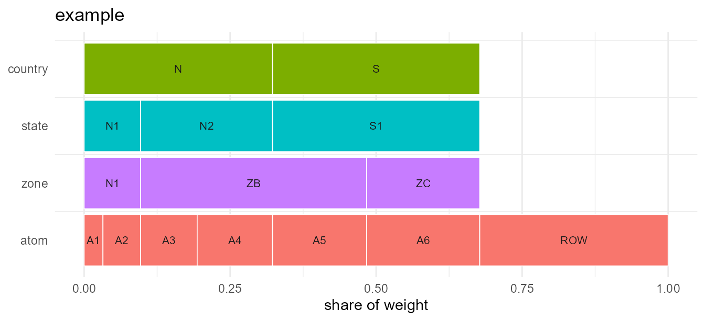

What a Geoscale is
A Geoscale is a nested spatial partition — the spatial
companion to a timescales::Calendar. It holds:
-
leaves— one row per atom (the finest region), one column per level, a uniqueregionkey, and one or more named weight columns; -
levels— the hierarchy, ordered coarsest first; -
members— the code vocabulary at each level; -
meta— name, weights, source, CRS.
Everything else — parent/child tables, ancestry, shares — is derived on demand. Nothing is cached on the object.
gs <- geoscale_example()
gs
#> Geoscale: example
#> Description: Synthetic example: reused code, non-nesting level pair, and an unassigned atom
#> Levels (4, coarsest first):
#> - country (2) [1 atom(s) unassigned]
#> - state (3) [1 atom(s) unassigned]
#> - zone (3) [1 atom(s) unassigned]
#> - atom (7)
#> Atoms: 7
#> Weights: km2, pop (default: km2)Levels are partitions, not necessarily a tree
This is the main thing that differs from the time domain. Time levels nest cleanly: every hour belongs to exactly one day. Spatial levels frequently do not.
In the example, zone ZB draws atoms from two different
states, so state and zone cross-cut:
geoscale_nests(gs, "country", "state")
#> [1] TRUE
geoscale_nests(gs, "state", "zone")
#> [1] FALSE
#> attr(,"offenders")
#> [1] "ZB"Real data behaves the same way. In the IDEEA region table for India,
the reg32 code APY merges Andhra Pradesh with
part of Puducherry, so reg35 does not nest inside
reg32.
This is exactly why the atom layer exists, and why
recast_geoscale() always routes through it.
Codes are not unique across levels
The code "N1" exists at both state and
zone. A bare code is therefore ambiguous, and every lookup
must name its level:
geoscale_children(gs, "state", "N1")
#> [1] "N1"
geoscale_children(gs, "zone", "N1")
#> [1] "A1" "A2"In IDEEA, 46 of 62 codes appear at more than one level —
AN appears at seven. This is the norm, not an edge
case.
Recasting: one verb, both directions
recast_geoscale() projects source values down to atoms
and then aggregates them up to the target, so aggregation and
disaggregation are the same operation. The direction falls out of the
level ranks.
Going up, an extensive quantity is summed:
cap <- data.frame(atom = c("A1", "A2", "A3", "A4", "A5", "A6"),
capacity = c(1, 2, 3, 4, 5, 6))
recast_geoscale(cap, gs, from = "atom", to = "country", rule = "sum")
#> country capacity
#> 1 N 10
#> 2 S 11Going down, the same rule splits proportionally to a weight:
y <- data.frame(country = c("N", "S"), capacity = c(10, 20))
recast_geoscale(y, gs, from = "country", to = "state",
rule = "sum", weight = "km2")
#> state capacity
#> 1 N1 3
#> 2 N2 7
#> 3 S1 20Totals are preserved, and a round trip is exact:
up <- recast_geoscale(cap, gs, "atom", "state", rule = "sum")
back <- recast_geoscale(up, gs, "state", "atom", rule = "sum", weight = "km2")
back
#> atom capacity
#> 1 A1 1
#> 2 A2 2
#> 3 A3 3
#> 4 A4 4
#> 5 A5 5
#> 6 A6 6Rules
| rule | up (coarsen) | down (refine) | use for |
|---|---|---|---|
sum |
sum | split by weight | capacity, demand, area |
weighted_mean |
weighted mean | copy | efficiency, price, capacity factor |
mean |
plain mean | copy | diagnostics |
copy |
common value | copy | region-invariant scalars |
An intensive quantity must not be summed:
eff <- data.frame(atom = c("A1", "A2", "A3", "A4", "A5", "A6"),
eff = c(0.3, 0.4, 0.5, 0.5, 0.6, 0.6))
recast_geoscale(eff, gs, "atom", "state", rule = "weighted_mean", weight = "pop")
#> state eff
#> 1 N1 0.39
#> 2 N2 0.50
#> 3 S1 0.60Registering rules per parameter
Rather than passing rule= at every call site, register
it once. Each value column is then converted by its own rule in a single
call:
register_geo_rule("capacity", "sum")
register_geo_rule("eff", "weighted_mean", weight = "pop")
mix <- data.frame(atom = c("A1", "A2", "A3", "A4", "A5", "A6"),
capacity = c(1, 2, 3, 4, 5, 6),
eff = c(0.3, 0.4, 0.5, 0.5, 0.6, 0.6))
recast_geoscale(mix, gs, "atom", "state")
#> state capacity eff
#> 1 N1 3 0.39
#> 2 N2 7 0.50
#> 3 S1 11 0.60An explicit rule= always overrides the registry.
Partial coverage
Region tables routinely have atoms with no code at a coarser level —
a rest-of-world row, offshore zones, unassigned territory. The example
has an atom ROW with no country.
na_action decides what happens to it:
x <- rbind(cap, data.frame(atom = "ROW", capacity = 100))
# "drop" (default) loses the uncovered share, and says so
out <- suppressWarnings(
recast_geoscale(x, gs, "atom", "country", rule = "sum"))
sum(out$capacity)
#> [1] 21
# "keep" conserves the total in an explicit NA group
kept <- recast_geoscale(x, gs, "atom", "country", rule = "sum",
na_action = "keep")
sum(kept$capacity)
#> [1] 121Note that energyRt reads NA in a region
column as a wildcard meaning all regions, so
"keep" output should not be passed there unfiltered.
Identifier columns
Columns that are neither the key nor a value are kept as grouping columns, so panel data converts in one call:
panel <- data.frame(
atom = rep(c("A1", "A2", "A3"), each = 2),
year = rep(c(2020L, 2021L), 3),
capacity = c(1, 2, 3, 4, 5, 6)
)
recast_geoscale(panel, gs, "atom", "state", rule = "sum", values = "capacity")
#> state year capacity
#> 1 N1 2020 4
#> 2 N2 2020 5
#> 3 N1 2021 6
#> 4 N2 2021 6Navigating and subsetting
geoscale_regions(gs, "state")
#> [1] "N1" "N2" "S1"
geoscale_family(gs, "state", "zone")
#> parent_level parent child_level child
#> 1 state N1 zone N1
#> 2 state N2 zone ZB
#> 3 state S1 zone ZB
#> 4 state S1 zone ZC
geoscale_descendants(gs, "country", "N")
#> level region
#> 1 state N1
#> 2 state N2
#> 3 zone N1
#> 4 zone ZB
#> 5 atom A1
#> 6 atom A2
#> 7 atom A3
#> 8 atom A4
geoscale_share(gs, "state", weight = "km2", within = "country")
#> state country km2 share
#> 1 N1 N 300 0.3
#> 2 N2 N 700 0.7
#> 3 S1 S 1100 1.0
filter_geoscale(gs, "country", "N")
#> Geoscale: example
#> Description: Synthetic example: reused code, non-nesting level pair, and an unassigned atom
#> Levels (4, coarsest first):
#> - country (1)
#> - state (2)
#> - zone (2)
#> - atom (4)
#> Atoms: 4
#> Weights: km2, pop (default: km2)
gs["country", "N"]
#> Geoscale: example
#> Description: Synthetic example: reused code, non-nesting level pair, and an unassigned atom
#> Levels (4, coarsest first):
#> - country (1)
#> - state (2)
#> - zone (2)
#> - atom (4)
#> Atoms: 4
#> Weights: km2, pop (default: km2)
prune_geoscale(gs, "state")
#> Geoscale: example
#> Description: Synthetic example: reused code, non-nesting level pair, and an unassigned atom
#> Levels (2, coarsest first):
#> - country (2)
#> - state (3)
#> Atoms: 3
#> Weights: km2, pop (default: km2)Building a Geoscale
Three layers, from most to least convenient:
# Layer 2: from crosswalks (ragged hierarchies are the norm in space)
geoscale_build(
data.frame(country = c("N", "N", "S"), state = c("N1", "N2", "S1")),
data.frame(state = c("N1", "N1", "N2", "S1"),
atom = c("A1", "A2", "A3", "A4")),
levels = c("country", "state", "atom"),
weights = data.frame(atom = c("A1", "A2", "A3", "A4"),
km2 = c(10, 20, 30, 40))
)
#> Geoscale: <unnamed>
#> Levels (3, coarsest first):
#> - country (2)
#> - state (3)
#> - atom (4)
#> Atoms: 4
#> Weights: km2 (default: km2)
# Layer 3: the escape hatch - a wide table you already have
df <- data.frame(
country = c("C1", "C1", "C2"),
atom = c("A1", "A2", "A3"),
km2 = c(100, 200, 300)
)
geoscale_from_leaves(df, levels = c("country", "atom"))
#> Geoscale: <unnamed>
#> Levels (2, coarsest first):
#> - country (2)
#> - atom (3)
#> Atoms: 3
#> Weights: km2 (default: km2)Layer 1 is geoscale_from_provider(); see
vignette("from-naturalearth").
Plotting
geoscale_autoplot() draws the hierarchy itself as an
icicle — one row per level, widths proportional to weight. It needs no
geometry.

With geometry attached via attach_geometry_geoscale(),
geoscale_plot() draws a choropleth instead — pass a
data.frame and name the column to colour by.
geoscale_example() carries no geometry, so those figures
need a map, and they live in the online article Plotting
geoscales: choropleths by level and by value, four alternative
layouts over one hierarchy, recasting seen on the map, and where display
names come from.